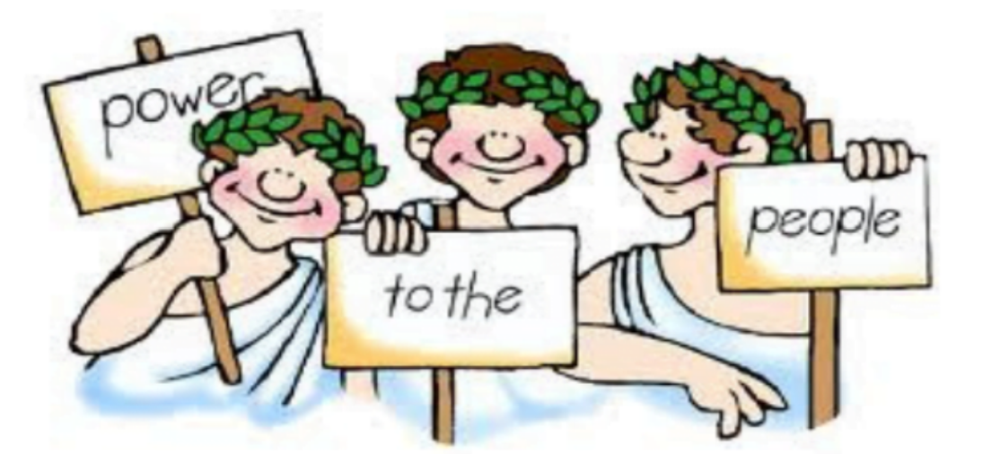

Teknologi og demokrati

De siste årene har det være mye snakk og diskusjoner om hvordan teknologi kan påvirke dagens demokrati og samfunn.
Som vi vet er det mye positivt med teknologi i dagens samfunn, men det finnes også ulemper og mye negativt som skal være skadelig for samfunnet og enkeltindivider.
Men hva handler egentlig demokrati om, og hvordan påvirker egentlig teknologi dagens demokrati?
Demokrati er en styreform der makten ligger hos folket, enten direkte eller gjennom folkevalgte.
Det er et styresett der alle innbyggere har medbestemmelse i beslutninger som påvirker deres liv.
Ordet demokrati kommer fra de greske ordene «demos» som betyr «folk» og «kratos» som betyr «styre».
Demokrati

Hva er et demokrati?
Et demokrati er et styresett der makten ligger hos folket, ofte gjennom folkevalgte i avstemninger til for eksempel stortingsvalg og kommunevalg.
Det finnes mange forskjellige former for demokrati, men det alle har til felles er at de er basert på ideen om at innbyggerne skal ha medbestemmelse i beslutningene som påvirker deres og andres liv.
Representativt demokrati er den vanligste formen for demokrati, og handler om at innbyggerne velger representanter til å lage lover og retningslinjer på deres vegne.
Andre former for demokrati inkluderer direkte demokrati, der innbyggerne tar beslutninger direkte, og hybriddemokrati.
Hybriddemokrati kombinerer elementer av både representativt og direkte demokrati.
Beskyttelse av individuelles rettigheter og friheter er noen av demokratiets nøkkelprinsipper, slik som ytrings- og religionsfrihet.
Et land der alle borgere er underlagt de samme lovene og at ingen er hevet over loven blir kalt for en rettstat.
Begrepet «majoritetsstyre, minoritetsrettigheter» der minoriteters rettigheter blir beskyttet selv om de har blitt overstemt av flertallet
Det er mange fordeler med demokrati fremfor andre styreformer, som diktaturer eller monarkier.
For eksempel kan det åpne for fredelig overføring av makt og er med å oppmuntre til deltakelse av borgere i den politiske prosessen, noe som ofte fører til økt samfunnsengasjement.
Dette har også åpnet for at de ulike stemmene i et samfunn kan bli hørt, og fremmer beskyttelse av minoriteters rettigheter.
Men selv om det finnes fordeler med et demokrati, er det imidlertid ikke uten ulemper, som vil si at det kan ha noen utfordringer.
Et eksempel på dette kan en ren form for demokrati være treg og ineffektiv i beslutningstaking.
I enkelte situasjoner kan et representativt demokrati over tid føre til at de mektige og velstående individene kontroller makten og undertrykker stemmer som ikke samsvarer med deres interesse.
Men hva har egentlig demokrati med teknologi å gjøre?
Teknologi kan både styrke og ødelegge demokrati. P
å den ene siden kan det gjøre det lettere for folk å få tilgang til informasjon og delta aktivt innenfor politikk.
Et eksempel er å kunne tillate nettbasert avstemning.
Et annet eksempel kan være at det er lettere for hver enkelt person til å engasjere seg med offentligheten om dine
egne politiske aktiviteter gjennom sosiale medier.
På en annen side kan teknologi også brukes til å spre «fake news» og propaganda, manipulere opinionen og valg.
I tillegg kan bruk av data og algoritmer av regjeringer og politiske partier skape bekymring for personvern.
Det er viktig at demokrati tenker nøye gjennom hvordan de bruker teknologi og sørge for at den brukes på slike
måter at det kan både støtte og styrke demokratiet.